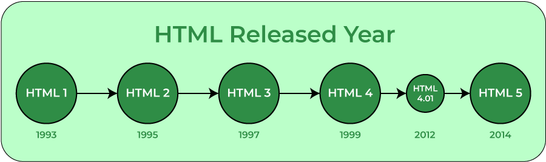
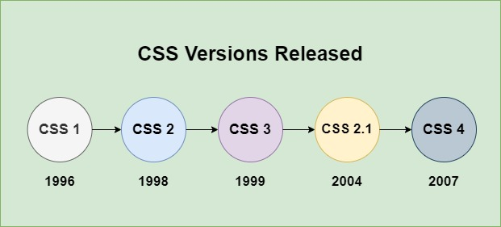

EVOLUTION OF HTML
What is HTML?
- HTML is the standard mark-up language for creating Web pages.[3]
- It defines the content and structure of web content.[3]
" CATEGORIES OF HTML "
- Transition HTML - is the most common type of HTML.[2]
- Strict HTML - is meant to return rules to HTML and make it more reliable.[2]
- Frameset HTML - allows Web developers to create a mosaic of HTML documents and a menu system.[2]

| HTML 1.0 |
| HTML 2.0 |
| HTML 3.0 |
| HTML 3.2 |
| HTML 4.01 |
| XHTML 1.0 |
| HTML 5.0 |
HTML 1.0
HTML 1.0 introduced elements that made it possible to add structure to the content on web pages. These included headings, lists, paragraphs, and images.[5]
HTML 1.0 was very simple in comparison to later versions of HTML. It didn’t have styling options or the ability to control how content would display in a web browser. Additionally, HTML 1.0 lacked any support for tables.[5]
Although HTML 1.0 introduced fonts, it was limited. In other words, there was minimal scope for changing the text style or size.[5]
HTML 2.0
The HTML 2.0 version was released in 1995 and had considerable improvements from the previous version.[5]
This version made HTML into a standard by establishing common rules and regulations that all web browsers had to follow.[5]
HTML 2.0 introduced the table tag for creating tabular data on web pages, contributing to better organization of data.[5]
HTML 3.0
HTML 3.0 is a set of extensions to the HTML hypertext markup format. Like HTML 2.0, it is based on the Standard Generalized Markup Language (SGML)[3]
It included improved new features of HTML, giving more powerful characteristics for webmasters in designing web pages. But these powerful features of the new HTML slowed down the browser in applying further improvements.[3]
Other major additions in HTML 3.0 includes fill-out forms, tables and mathematical equations, and features for greater control of layout.[3]
HTML 3.2
HTML 3.2 brought better ways to create interactive forms on websites. Developers could make forms that were more interactive and dynamic for users.[5]
Another important feature included in HTML 3.2 was support for CSS (Cascading Style Sheets). It helped designers improve the look of web pages by styling and customizing HTML elements.[5]
Handling images became easier with HTML 3.2. It allowed for better control over image size, alignment, and text descriptions.[5]
HTML 4.01
Previously, one had to place CSS on each page to apply the styles. However, with 4.01, CSS files could be linked and included in each HTML page using the link tag. This helped maintain consistent styles across web pages without repeating CSS code.[5]
HTML 4.01 also introduced some new tags like “fieldset”, “header”, “footer”, and “legend”. These tags consequently enhanced the presentability of the content.[5]
In addition, HTML 4.01 made tables more powerful. We could use attributes like ‘colspan’ and ‘rowspan’ to make cells in a table span across multiple columns or rows. This made it easier to create more complicated and interesting tables.[5]
XHTML 1.0
XHTML 1.0 is similar to HTML but has a stricter version with more stringent rules for elements, attributes, and syntax. Due to such strict criteria, a common standard was created for web pages. This reduced the scope for incompatibility between browsers.[5]
XHTML 1.0 offered compatibility with XML tools. It meant that XML parsing libraries and transformation tools, commonly used for working with XML documents, could also be utilized with XHTML documents.[5]
Furthermore, XHTML 1.0 documents were easily adaptable to any future versions of HTML or XML without any significant changes.[5]
HTML 5.0
The version brought extensive support for new HTML tags. Furthermore, HTML5 provided support for new form elements like input elements of different types and geolocations support tags, etc.[5]
One important addition was the input type=”email” tag, which confirms whether the user input is a valid email address. Likewise, another form element was the input type=”password” tag, which was designed to capture passwords securely. The browser displayed special symbols as user input in the password field, thereby protecting the password from being revealed.[5]
EVOLUTION OF CSS
What is CSS?
- Declarative-style computer programmicontentng language used to design website .[4]
- CSS is one of the three main languages used to design Web content, along with HTML
(hypertext mark-up language) and JavaScript.[4]
" TYPES OF CSS "
- External CSS - is a file that HTML files will link to.[2]
- Internal CSS - is specified at the beginning of an HTML document.[2]
- Inline CSS - is written for a specific element in the HTML document.[2]

| CSS1 |
| CSS2 |
| CSS2.1 |
| CSS3 |
| CSS4 |
CSS1
The first official CSS specification, CSS1, was introduced in 1996.[1]
It allowed for basic styling’s, such as changing text colors, fonts, and backgrounds, but was limited in terms of layout control.[1]
Introduced the concept of selectors for specifying which elements to style.[6]
Provided support for font properties, text alignment, and background properties.[6]
CSS2
CSS2, released in 1998, introduced a plethora of new features, including positioning, improved control over layout, and the introduction of media types for different devices.[1]
It introduced pseudo-classes and pseudo-elements for more specific targeting.[6]
It add support for media types (e.g., screen, print) and handling print styles and improved support for internationalization, including bidirectional text.[6]
CSS2.1
This version focused on clarifying and improving the CSS2 specification, providing greater stability and browser compatibility.[1]
It standardized box model properties, improving cross-browser compatibility.[6]
Introduced CSS3 features like color properties (e.g., rgba(), hsl()), but they were not widely implemented.[6]
CSS3
CSS3 is not a single monolithic release but a collection of modular specifications introduced gradually.[1]
These modules cover various aspects of web design, such as animations, gradients, and flexible box layouts.[1]
It introduced the ability to create smooth transitions and animations between CSS property values.[6]
CSS4
CSS4 is the future of CSS, aiming to further enhance web design capabilities, including responsive design, variable fonts, and improved grid systems.[1]
Specific modules and features are still in development and may include improvements to existing modules and new features.[6]
|
p : Used for paragraphs of text. h1 to h3 : It is use for headings of different sizes. a : Used for hyperlinks. img : Used for displaying images. ul : Used for creating unordered lists. div : Used for grouping and styling elements.d and ordered list input : Used for creating input fields. em : use to highligh a word or a sentence table : use to input tables li : use in making list dl : It defines a description list. dd : Is used to describe a term/name in a description list. dt : It defines a term/name in a description list. tr : It is use to define a row in an HTML table. br : It is use to define a row in an HTML table. td : It is use to define a data cell in a table. caption : It defines a table caption. div : It defines a division or a section in an HTML document. nav : It defines a set of navigation links. target : It specifies where to open the linked document. u : Underline a specific word or text. id : is used to point to a specific style declaration in a style sheet. |
|
color : It is use to set the text color. font-size : Used to set the size of the font. background-color : Used to set the background color. margin : Used to create space around an element. padding : Used to create space within an element. border : Used to create a border around an element. display : Used to specify the display behavior of an element. font-weight : Used to change from light to bold letters. width : It sets the width of the element. height : It sets the height of the element. Font-family : It specifies a prioritized list of one or more font family names List-style-type : It specifies the type of list-item marker in a list. text-decoration : It specifies the decoration added to text |
References
[1] AlmaBetterBytes (2024) The History of CSS. Available at:
https://www.almabetter.com/bytes/articles/history-of-css(Access : 28 September 2024)
[2] Study.com (2024) What is an HTML Document? - Structure, Types & Examples. Available at:
https://study.com/academy/lesson/what-is-an-html-document-structure-types-examples.html(Access : 28 September 2024)
[3] W3Schools (2024) Introduction to HTML. Available at:
https://www.w3schools.com/html/html_intro.asp(Access : 28 September 2024)
[4] Britannica.com (2024) CSS. Available at:
https://www.britannica.com/search?query=css(Access : 8 October 2024)
[5] EDUCBA (2024) Versions of HTML. Available at:
https://www.educba.com/versions-of-html/(Access : 8 October 2024
[6] Medium.com (2024) Versions of CSS. Available at:
https://blog.stackademic.com/all-css-version-with-features-64fea1a50791(Access : 8 October 2024